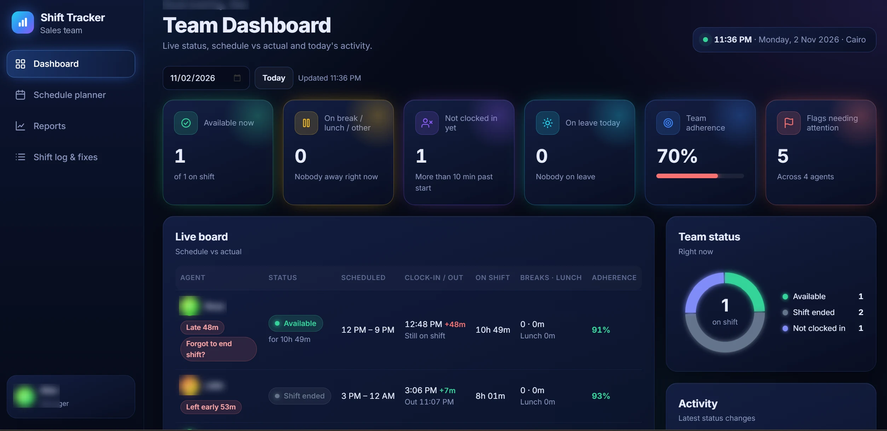
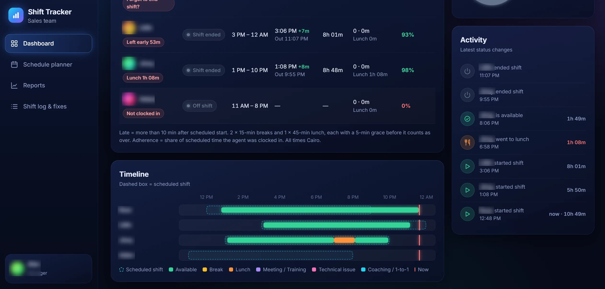

Internal tool · operationsBuilt in-house · anonymised
Shift Tracker
A live board that shows who is on shift, on break or late, and how the day went.

The brief
As an operations manager on a remote sales team, I needed what the expensive workforce tools give you: who started on time, who is on break, and how actual hours compare to the schedule. So I designed and built it.
The approach
- Live board. Every agent's status, scheduled shift, clock-in and out, breaks, lunch and adherence on one screen.
- Rules built in. Two 15-minute breaks and a 45-minute lunch per shift; late is flagged after 10 minutes.
- Timeline view. Scheduled versus actual for the whole team, colour-coded by status.
- Audit trail. Every status change logged with a timestamp to sheets for reporting and fixes.
The result
A working operations system replacing guesswork with a live picture of the team. It's here because the same thinking (clear rules, clean interface, reliable automation) goes into every client project.

What it tracks
- Live statusAvailable, on break or lunch, not clocked in, on leave.
- AdherenceScheduled versus actual time, per agent and for the team.
- FlagsLate starts, early log-offs and forgotten shift ends.
- Schedule plannerShifts set ahead of time, compared live.
- Activity feedEvery status change with a timestamp.
- Reports & fixesDaily logs to sheets, with a correction flow.
Names and company details are blurred or replaced to protect the team and the business.
Next project